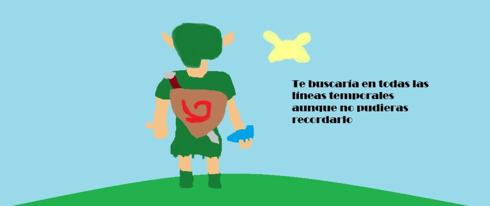
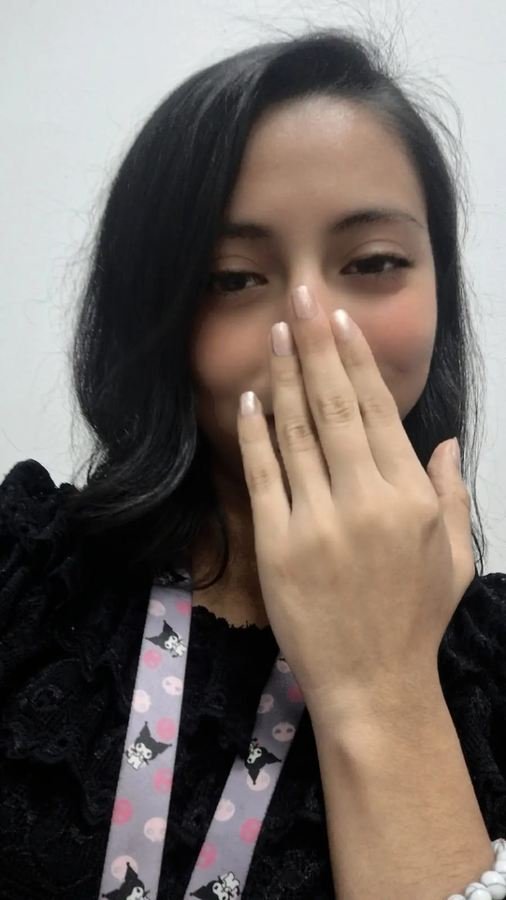
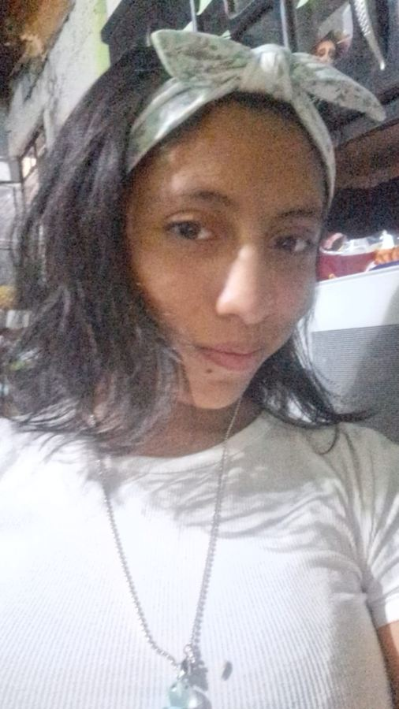
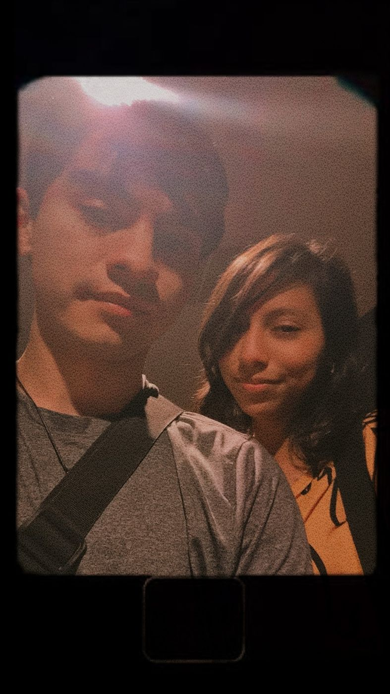
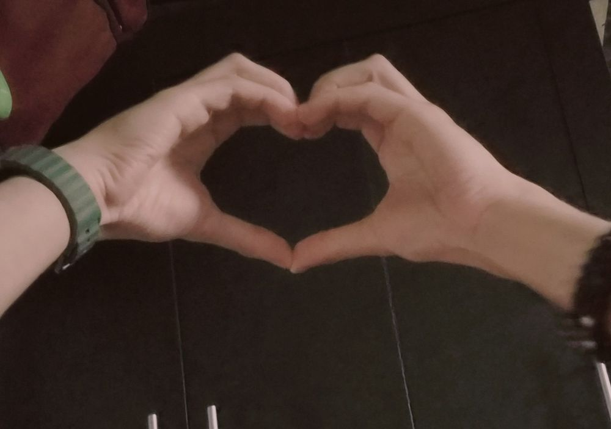
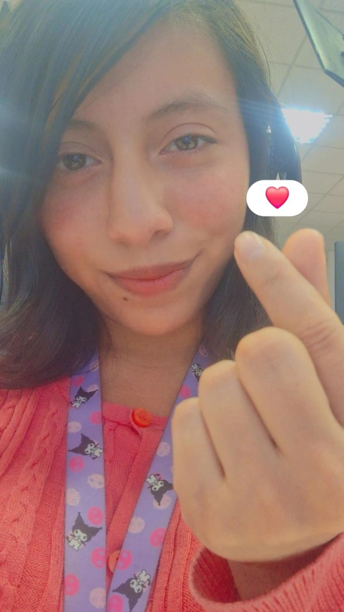
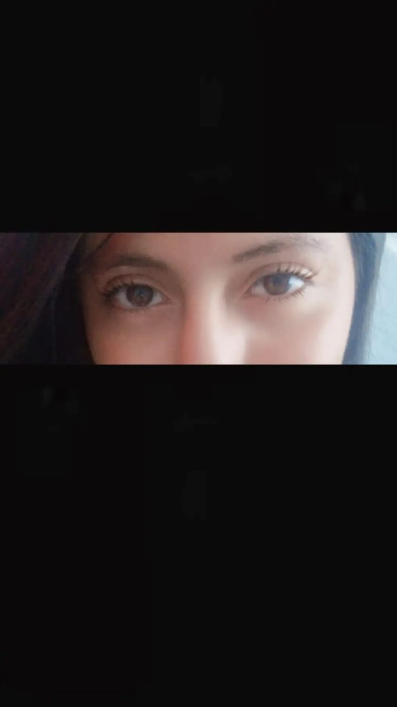

Más allá de estas puertas hay un libro escrito con cariño. Cada página guarda una palabra bonita, un recuerdo y un pedacito de este pequeño universo.
❀
Antes de comenzar
Para Gaby
Que al abrir estas páginas recuerdes lo querida, valiosa y extraordinaria que eres. Este pequeño universo lleva tu nombre y está hecho para celebrar tu historia, sin prisas y con mucho cariño.
Con todo mi cariño · ♡
✧ El libro de la princesa Gaby ✧✧ 0 / 4 destellos
♕
Prólogo
La princesa y el jardín que había olvidado florecer
Un cuento para Gaby
Había una vez, más allá de los caminos que aparecen en los mapas, un reino escondido entre montañas de lavanda y cielos color violeta. Allí vivía una princesa llamada Gaby. No era un reino de riquezas ni de grandes ejércitos: su magia vivía en los pequeños detalles, en las risas inesperadas y en todo aquello que hacía único su corazón.
Un cuento escrito con cariño · ♡
1
✧
Una dedicatoria
La carta que llegó con el viento
Un mensaje que encontró el camino hasta el castillo
Una mañana, una carta aterrizó sobre el alféizar de su ventana. No llevaba remitente, solo una frase: «Hay un jardín que espera por ti». En una esquina, casi escondido bajo la cera violeta, había dibujada una diminuta llave dorada. Gaby la guardó cerca del corazón junto con la carta. No sabía qué encontraría al final del camino, pero algo en aquellas palabras la invitó a abrir la puerta.
❦ ✧ ❦
2
❀
Capítulo I
El jardín de las pequeñas luces
La primera pista estaba escondida entre las flores
Al otro lado del bosque, Gaby encontró un jardín dormido. Las flores tenían los pétalos cerrados y el sendero parecía esperar una señal. Una pequeña hada le explicó que cada flor despertaba cuando alguien recordaba una cosa bonita. La princesa se acercó a la primera y, al tocarla, una luz tibia iluminó el camino. Entre sus pétalos apareció por un instante el mismo destello dorado que había visto en la carta.
3
Un recuerdo para guardar
✧ ❦ ✧
El sendero se abrió bajo sus pies. A cada paso, el jardín parecía reconocerla, como si hubiera estado guardando aquel camino desde hacía muchísimo tiempo.
♡
4

Un recuerdo para guardar
✧ ❦ ✧
En una fuente de agua clara, la princesa vio reflejadas muchas versiones de sí misma. Comprendió que todas merecían ternura: la que reía, la que soñaba y también la que necesitaba descansar.
♡
5
Un recuerdo para guardar
✧ ❦ ✧
Unas luciérnagas la acompañaron hasta un puente de piedra. No le pidieron que fuera valiente; simplemente caminaron a su lado mientras ella encontraba su propio ritmo.
♡
6
Un recuerdo para guardar
✧ ❦ ✧
Al cruzar el puente, escuchó una melodía suave entre los árboles. Era el bosque diciéndole que no todas las cosas hermosas hacen ruido para hacerse notar.
♡
7

Un recuerdo para guardar
✧ ❦ ✧
Más adelante encontró un pequeño claro lleno de flores blancas. Allí descubrió que la belleza no necesitaba compararse con ninguna otra para ser verdadera.
♡
8
Un recuerdo para guardar
✧ ❦ ✧
El camino subía hacia una colina. Hubo un momento en que pareció demasiado largo, así que Gaby se detuvo. El cielo no se enfadó por esperarla; el mundo también sabe tener paciencia.
♡
9
Un recuerdo para guardar
✧ ❦ ✧
En la cima había una ventana antigua que mostraba recuerdos luminosos. La princesa sonrió: incluso los instantes sencillos pueden convertirse en tesoros cuando se guardan con cariño.
♡
10
Un recuerdo para guardar
✧ ❦ ✧
Una mariposa se posó cerca de ella y siguió volando. Gaby entendió que algunas cosas llegan para acompañarnos un tramo, y aun así dejan algo bonito en el corazón.
♡
11

Un recuerdo para guardar
✧ ❦ ✧
El bosque se volvió más silencioso. Por primera vez, la princesa no sintió que debía llenar el silencio. Respiró hondo y dejó que la calma también formara parte de la aventura.
♡
12
Un recuerdo para guardar
✧ ❦ ✧
Encontró una pequeña biblioteca bajo un árbol. En sus estantes no había historias de princesas perfectas, sino relatos de personas que habían aprendido a seguir adelante siendo ellas mismas.
♡
13

Un recuerdo para guardar
✧ ❦ ✧
En una página leyó que nadie florece todos los días. Hay temporadas para crecer, otras para recuperar fuerzas y otras para descubrir que descansar también es parte del viaje.
♡
14

Un recuerdo para guardar
✧ ❦ ✧
Al cerrar el libro, una brisa movió las hojas y dejó caer una estrella de papel. Tenía escrito: «No tienes que demostrar tu valor. Ya lo llevas contigo». En el reverso alguien había dibujado una cerradura diminuta, rodeada de cuatro estrellas.
♡
15
Un recuerdo para guardar
✧ ❦ ✧
La princesa continuó hasta un lago violeta. En el agua danzaban reflejos de momentos felices, pequeñas aventuras y gestos que quizá parecían insignificantes, pero que habían hecho más bonito el camino.
♡
16
Un recuerdo para guardar
✧ ❦ ✧
En la orilla había dos piedras formando un corazón. Gaby las acomodó con cuidado y pensó que algunas cosas se construyen así: con paciencia, presencia y detalles pequeños.
♡
17
Un recuerdo para guardar
✧ ❦ ✧
El sendero se llenó de pétalos. No anunciaban el final de la aventura, sino que el jardín estaba despertando poco a poco, flor por flor, como sucede con todo lo que merece tiempo.
♡
18

Un recuerdo para guardar
✧ ❦ ✧
Al caer la tarde, la princesa descubrió que la corona no pesaba por estar hecha de oro, sino por todo lo que había aprendido a reconocer en sí misma: sensibilidad, esperanza y una fuerza que también sabía descansar.
♡
19

Un recuerdo para guardar
✧ ❦ ✧
Una última luciérnaga la condujo hasta una colina desde donde se veía el reino entero. Gaby comprendió que el lugar mágico no estaba lejos: también vivía en su manera de mirar el mundo.
♡
20
Un recuerdo para guardar
✧ ❦ ✧
Y cuando el primer lucero apareció, el jardín floreció por completo. No porque la princesa hubiera vencido a nadie, sino porque había recorrido el camino siendo ella misma.
♡
21
✦
Capítulo II
El mapa de las estrellas
La siguiente pista estaba escrita en el cielo
La carta le había hablado de cinco estrellas que señalaban el camino de regreso. Gaby levantó la mirada y las encontró brillando sobre el reino. Algunas eran intensas; otras apenas un destello. Al unirlas con la mirada, Gaby distinguió la silueta de una llave. Entonces recordó el dibujo de la carta: quizá las estrellas no señalaban el camino de regreso, sino el lugar al que debía llegar. Todas pertenecían al mismo cielo, y la princesa también tenía allí su lugar.
22
♡
Capítulo III
El rincón donde viven los recuerdos
Antes de volver al castillo, quedaba un último regalo
Al pie de la colina encontró una mesa pequeña, iluminada por luciérnagas. Sobre ella descansaban tres sobres. «Son palabras para llevar contigo», susurró el hada. «Abre el que necesites hoy; los demás estarán aquí cuando quieras volver». Antes de marcharse, el hada dejó sobre la mesa una última pista: «La llave no abre una puerta del castillo. Abre aquello que has ido descubriendo de ti misma».
Toca un sobre para abrir tu carta sorpresa.
♡
Una carta para ti
Querida Gaby
Con cariño, siempre ♡
23
☾
Capítulo IV
La noche también forma parte del cuento
La princesa aprendió que descansar también es valentía
No todos los días del reino eran luminosos. A veces el camino exigía cuidados, paciencia y más energía de la que Gaby sentía tener. Entonces recordó algo importante: no tenía que poder con todo, ni convertir cada día en una hazaña. Podía detenerse, pedir compañía y cuidarse con ternura. La diabetes formaba parte de su camino, pero nunca sería toda su historia. Su vida era mucho más grande que cualquier dificultad. Y entonces comprendió la última pista: la llave no había estado buscando una cerradura fuera de ella. El jardín entero había despertado cada vez que Gaby se permitía reconocerse con cariño.
24
✿
Epílogo
Y el cuento apenas comenzaba
El jardín guardó una última sorpresa para su princesa
Cuando Gaby regresó al castillo, descubrió que el jardín había florecido detrás de ella y que las estrellas seguían señalando nuevos caminos. No había encontrado una vida sin días difíciles; había encontrado algo mejor: la certeza de que podía avanzar a su manera, rodeada de cariño y sin dejar de ser ella.
Y si alguna vez vuelve a perder el camino, las flores, las cartas y aquel cielo violeta sabrán recordarle que siempre puede comenzar una página nueva. En el centro del jardín apareció una pequeña puerta de luz. Gaby acercó la llave dorada y descubrió que no había un tesoro detrás, sino un espejo que reflejaba todo lo que ella ya era: una persona valiosa, querida y llena de posibilidades.
Con mucho cariño. ♡
✦ ✧ ♡ ✧ ✦
25
Página 1 de 25
✦ ♡ ✦
Un último secreto
Una sorpresa para la princesa
Durante el viaje encontraste pequeños destellos. ¿Recuerdas la llave que apareció en la primera carta? Si reuniste las cuatro pistas, podrás descubrir qué ha estado guardando el jardín.
♙
La cerradura espera los cuatro destellos.
♡
Lo que guardaba el jardín
El tesoro eras tú, princesa
La puerta se abrió sin hacer ruido. Detrás no había cofres ni montañas de oro: había un espejo rodeado de flores. En él, Gaby pudo ver todo lo que el viaje le había recordado: su ternura, su manera de iluminar los días, su fuerza incluso cuando necesita descansar y esa forma tan suya de hacer especial lo cotidiano.
La llave nunca quiso enseñarle que debía convertirse en alguien diferente. Solo quería ayudarla a descubrir que muchas de las cosas más valiosas que buscaba ya vivían dentro de ella.
Que nunca te falten motivos para creer en ti, personas que cuiden tu corazón y sueños que te hagan despertar con ilusión. Y cuando el mundo parezca enorme, recuerda: no tienes que recorrerlo todo hoy. Un pasito a la vez también es avanzar.
Tu cuento sigue. Y todavía guarda muchísimas páginas hermosas.
✦ ✧ ❀ ♡ ✧ ✦
✧ ✦ ✧
❀
La última página
Fin... por ahora.
Y cuando la princesa Gaby cerró el libro, el jardín no se apagó. Sus flores siguieron creciendo en silencio, esperando las nuevas historias que aún estaban por llegar.
Porque hay cuentos que terminan en una página, pero el cariño con el que fueron escritos permanece mucho después.
Gracias por existir y por ser tú. ♡
✧ ❀ ♡ ❀ ✧
Y colorín, colorado… este pequeño cuento queda guardado en un lugar bonito de tu corazón.
Cuando quieras, puedes cerrar esta pestaña. Las historias bonitas siempre pueden volver a abrirse. ♡